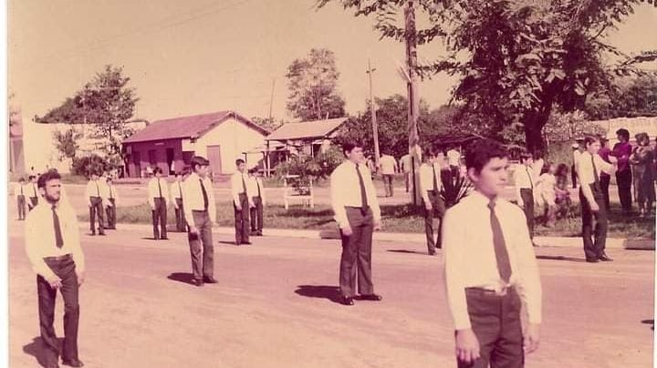
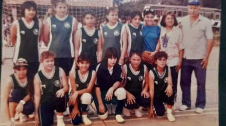

Historia del Colegio Nacional Salto del Guairá

El Colegio Nacional Salto del Guairá abrió sus puertas en marzo de 1972, siendo en ese entonces el Liceo Privado Salto del Guairá. Gracias al esfuerzo y buena voluntad de sus pioneros pobladores, funcionó en un salón del Batallón de Frontera N° 1, local que desapareció con el embalse del río Paraná. Entre los profesores pioneros se encontraban: el Dr. Clemente Jara Franco (director), el señor Julio César Riveros (secretario), y catedráticos como Francisco Viancheto, Pedro Ramón Girett y Reina Jara.
En 1974, el colegio pasó a ser Liceo Nacional y el 20 de marzo de 1976, por Resolución Ministerial N° 330, obtuvo la categoría de Colegio Nacional.
- Desde su fundación, miles de jóvenes han pasado por las aulas del Colegio Nacional Salto del Guairá, buscando cumplir sus sueños a través de la educación.
- 51 años de vivencias y esfuerzos de la comunidad educativa han hecho de esta casa de estudio un referente de formación integral en Salto del Guairá y en todo el departamento de Canindeyú.

- En el deporte, el colegio fue campeón del Torneo Copa Coca Cola en el año 2005, representando a nuestro país en el Torneo Internacional de Lima, Perú, en el año 2006.
- En Ferias de Ciencias e Ingeniería (FICIENCIA) fue finalista entre los países de Brasil, Argentina y Paraguay en la categoría de Ciencias Naturales y Ciencias del Suelo, realizado en Foz de Yguazú, Brasil, en los años 2013, 2016 y 2018.
- En matemáticas, sus alumnos fueron campeones departamentales de OMAPA (Medalla de Oro) y a nivel nacional (Medalla de Bronce).
- Obtuvieron el primer lugar a nivel nacional en el 5to Concurso de Experiencias Exitosas de Educación Financiera en el año 2018.
- Los alumnos del tercer curso se destacan en proyectos innovadores en diversas áreas, incluyendo Ciencias Básicas, Ciencias Sociales, y Técnico en Contabilidad, así como en el Bachillerato Técnico en Informática desde este año.
Actualmente, se trabaja en proyectos en Ciencias Naturales, como la Huerta Orgánica, la clasificación de insectos y botánica, abarcando todas las asignaturas. Además, se han realizado actividades en distintas áreas como la Feria de Física y Química, y en Lengua y Literatura, donde los estudiantes desarrollan sus habilidades de investigación y expresión escrita.
Fueron Directores de esta Institución:
- 1er Director: Dr. Clemente Jara Franco
- 2do Director: Don Carlos Méndez Goncalves
- 3er Director: Prof. Reina Galeano de Sarubbi
- 4to Director: Lic. Eugenio Rolón Espínola
- 5to Director: Prof. María Concepción Gayoso de Valiente
- 6to Director: Prof. Lic. Valerio Leiva Acosta
Actualmente son Directores del Colegio Nacional Salto del Guairá:
- Prof. Lic. Nancy Gloria Recalde Zuarez – Turno Mañana y Tarde
- Prof. Ángel Rafael Fleitas Caballero – Turno Noche